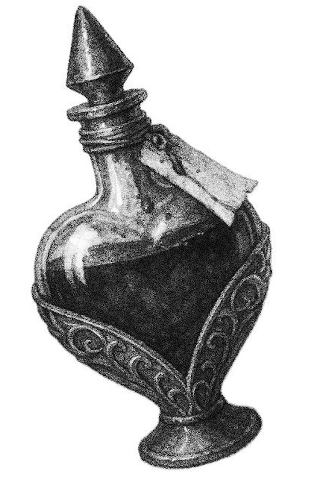
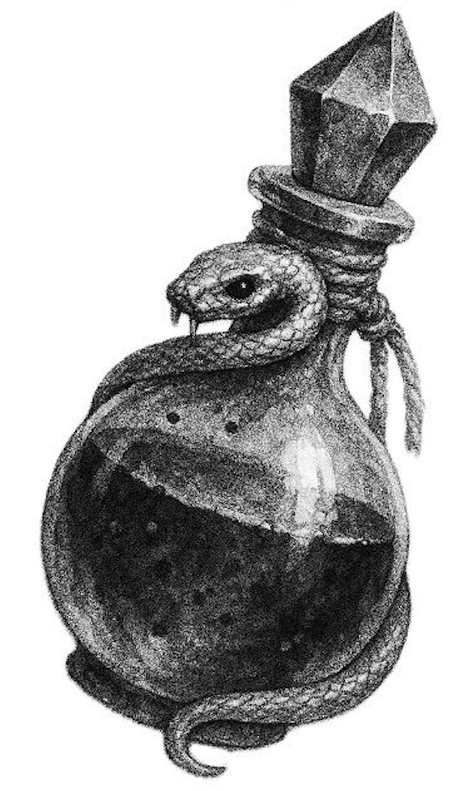
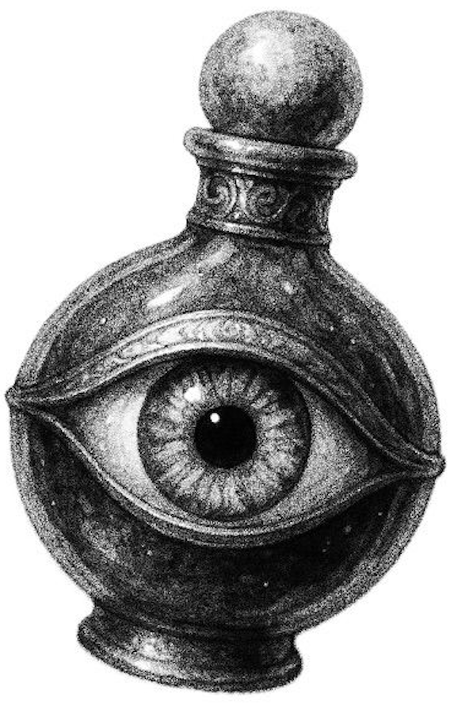

. ݁₊ ⊹ . ݁˖ . ݁pick your fate. ݁₊ ⊹ . ݁˖ . ݁
  Pulling the Knight of Pentacles suggests a time to stay committed and consistent. It often means progress is happening—even if it feels slow—and that patience and steady effort will pay off. It can also point to being dependable, focusing on practical matters, or needing to stick to a routine rather than rushing or taking shortcuts.

Pulling the Death card signals a major ending that leads to transformation. It suggests letting go of what’s no longer serving you so something new can begin. While it can feel intense, this card is ultimately about rebirth, deep change, and necessary transitions rather than literal death.
Pulling the Queen of Swords points to clarity, honesty, and sharp insight. It suggests thinking logically, communicating directly, and setting healthy boundaries. This card can also indicate emotional maturity—making decisions with wisdom and truth, even when it’s not the easiest path.